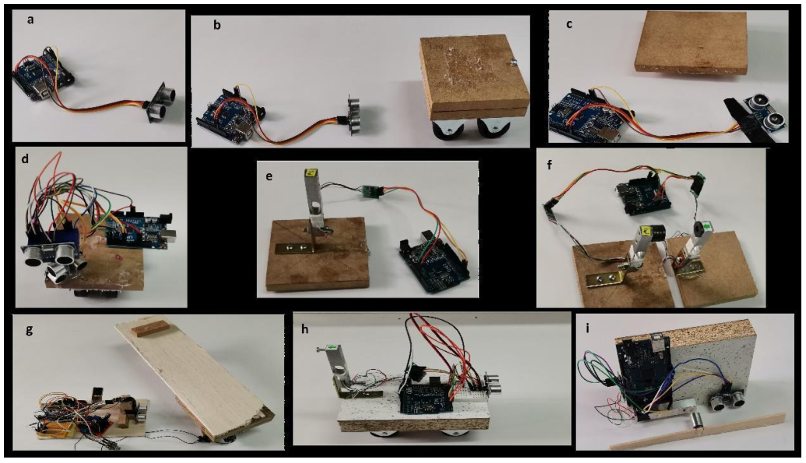

01
AI-Based Personalised Learning
Built a voice tutor that listens to answers, gives individual feedback and invites a revised attempt.
Voice coaching and role-play with feedback against job-specific criteria.
Learning Experience Designer · Instructional Designer
I’m an education researcher at LMU Munich. I design and evaluate learning experiences that combine technology and practical activities.
Eight projects show what I built and how it could be used in workplace learning.
01
Built a voice tutor that listens to answers, gives individual feedback and invites a revised attempt.
Voice coaching and role-play with feedback against job-specific criteria.

02
Built a HoloLens app that links an interactive 3D detector to a physical LEGO model.
Equipment familiarisation, guided inspections and repeatable task practice.
03
Used eye-gaze data with my team to identify how attention differed by task type and inform later learning design.
Find recurring error patterns and test improvements against a performance baseline.
04
Used AI tools to develop this portfolio and prototypes for role-play, process simulation and adaptive practice.
Prototype branching scenarios and practice tools for review and learner testing.

05
Designed Arduino activities in which learners collect sensor data and investigate physical systems.
Build training kits and workshops for equipment setup, measurement and troubleshooting.

06
Built Algodoo activities that let learners predict outcomes and test them by changing variables.
Practise process decisions and explore equipment behaviour in a simulation.
07
Created a Turkish-language Udemy course with 13 original Algodoo applications.
Design software onboarding with demonstrations, guided tasks and independent practice.
08
Designed quantum physics cases that ask learners to compare explanations and justify conclusions.
Run case workshops where teams use evidence to make and explain a decision.
Munich, Germany